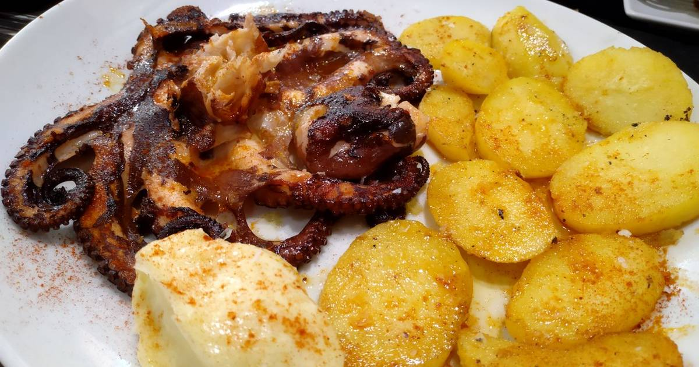

Gastronomía de Peñíscola

Paella de mariscos
Este plato típico de la región de Valencia es muy popular en Peñíscola. Se elabora con arroz, mariscos y verduras, y se cocina en una paellera de hierro sobre fuego de leña.

Pastissets de boniato
Este postre típico de la Comunidad Valenciana se elabora con una masa dulce rellena de boniato confitado. Es un bocado delicioso y muy popular en Peñíscola.

Licor de hierbas
Este licor se elabora a partir de una infusión de hierbas y se sirve como digestivo después de las comidas. Es una bebida muy popular en Peñíscola y en toda la región de Valencia.